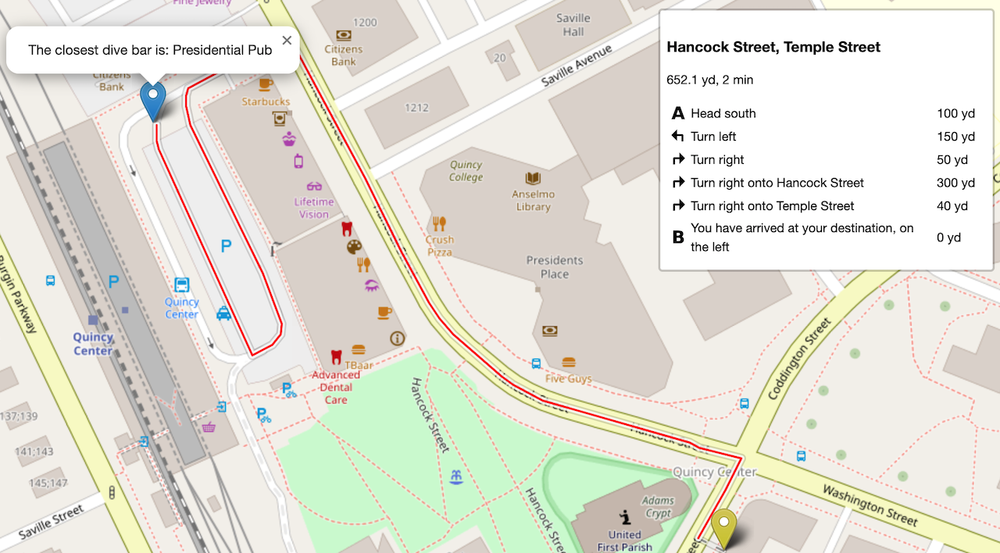
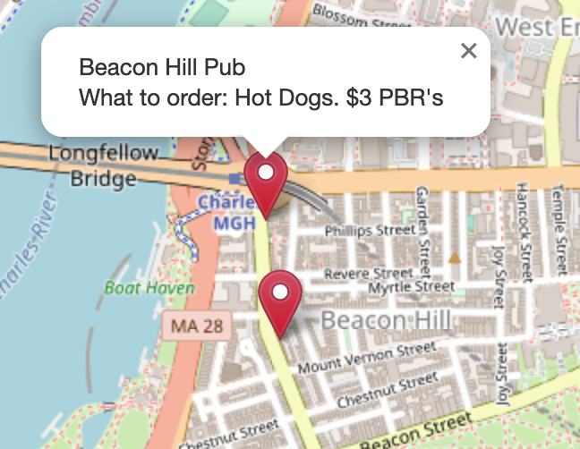
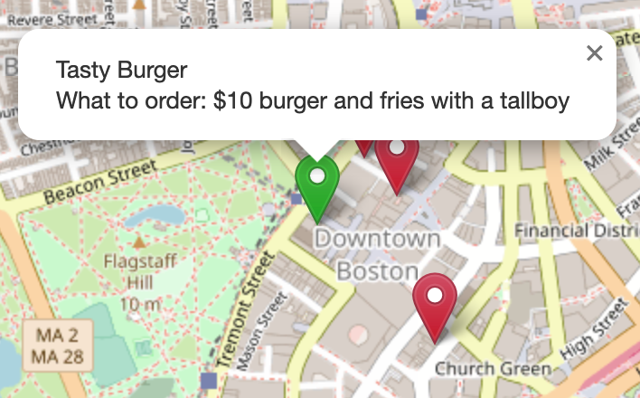
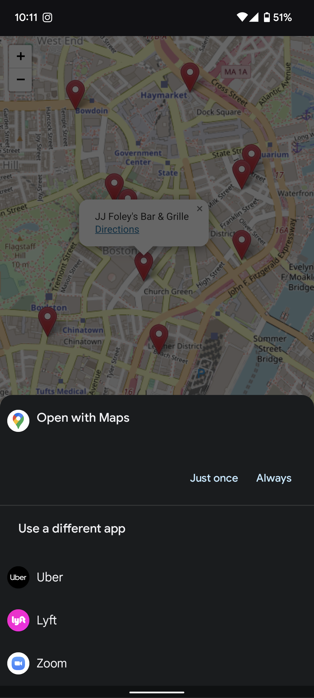

A website for quickly finding the best dive bars in Boston.
Thre's a couple of things to know when using the website. Yes, it needs your location to find the closest dive bar.
The blue icon is you and the red line shows the closest dive bar.

Bars also have notes on them for recommended orders and the cheapest bar

Restaurants with cheap greasy food are marked with green icons. Some of them also have cheap beer

If you're on your phone an added link for directions is added for each bar and restaurant

Contributing
Everything is hosted on GitHub. If there's something that you disagree with or think that I've missed something, open up a pull request against the locations.json file.
GitHub Repo